首页 > 拉菲精神 > 大事记
大事记
·1868·
詹姆斯·罗斯柴尔德购入在1855年波尔多葡萄酒分级中位列顶级一等酒庄的拉菲古堡
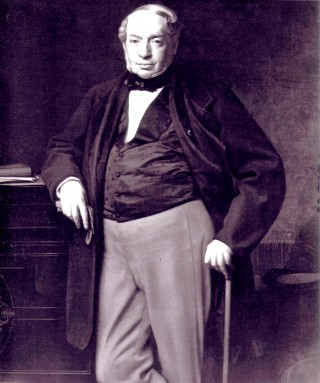
1868年8月8日，以伊尼亚斯-约瑟夫·范勒伯格的遗产继承为背景，詹姆斯·罗斯柴尔德男爵于公开拍卖会上购得此堡。3个月后男爵不幸去世，拉菲古堡由其三位爱子阿尔方索、古斯塔夫与埃德蒙共同继承，当时酒庄面积74公顷。
·1870·
梅多克“黄金时代”中的特佳年份
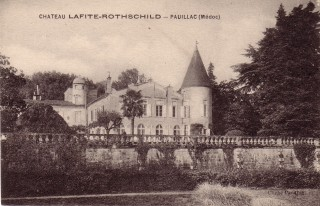
似乎是为了庆祝酒庄迎来新主人并应和这个葡萄酒繁荣时期的喜悦气氛，酒庄在1868年之后的十年中美酒迭出：1869、1870、1874、1875以及 1878年份皆是上佳之作。阿尔方索、古斯塔夫与埃德蒙男爵实是生逢其时，随着1855年分级制度而开始的梅多克“黄金时代”自罗斯柴尔德家族购入拉菲古堡后一直持续了15年左右。
·1900·
艰难时期中的两大杰出年份
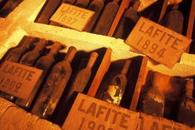
十九世纪末与二十世纪初噩梦连连：根瘤蚜虫害、霜霉病在葡萄中蔓延、顶级酒假酒事件、第一次世界大战、严重的经济危机，加之在第二次世界大战中拉菲古堡又被德军占领，导致酒庄生产状况跌至谷底。所幸的是在这一片漆漆黑夜中，仍有几颗闪亮的明星：1899、1900以及1926和 1929皆是特好年份。在此期间，爱德华、罗伯特、詹姆斯与莫里斯男爵从父辈手中接过庄园的命运。
·1946·
埃利·罗斯柴尔德男爵接掌拉菲古堡
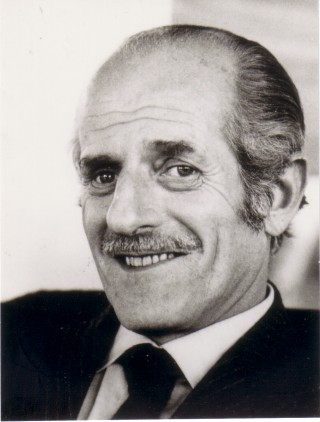
盖伊、阿兰、埃利与埃德蒙男爵成为拉菲古堡的新一代主人。从二十世纪上半叶的坎坷中逐步走出的拉菲古堡仍带着二战时期留下的尚未愈合的伤痕，埃利男爵挑起复兴酒庄的重任。1947与1949两个好年份给这艰难的复兴之路带来了希望的曙光。然而，1956年2月的一场霜冻损毁了波尔多许多葡萄园，拉菲亦受到很大影响。所幸的是随着葡萄藤的逐渐恢复，庄园迎来了它新纪元，1959与1961两个上佳年份开启了拉菲古堡新时代的篇章。
·1962·
购入1855年分级中波亚克产区的顶级四等酒庄杜哈米隆古堡
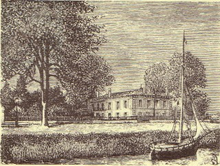
在一个多世纪内，杜哈米隆古堡都属于著名的卡斯德亚家族。但后来，古堡也遭受了因几度易主而带来的动荡命运，葡萄园亦被分割，葡萄酒的质量一路下滑。当罗斯柴尔德家族购得酒庄时，这里已仅余下17公顷的葡萄园。酒庄的大型重建工程随即展开：重新整合土地，几乎重新栽种全部葡萄树，安装新的酿造设备，建造酒窖……波亚克产区的杜哈米隆古堡终又回到了顶级酒庄的行列。
·1974·
埃利·罗斯柴尔德男爵接掌拉菲古堡
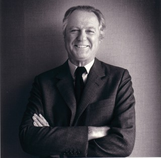
盖伊、阿兰、埃利与埃德蒙男爵成为拉菲古堡的新一代主人。从二十世纪上半叶的坎坷中逐步走出的拉菲古堡仍带着二战时期留下的尚未愈合的伤痕，埃利男爵挑起复兴酒庄的重任。1947与1949两个好年份给这艰难的复兴之路带来了希望的曙光。然而，1956年2月的一场霜冻损毁了波尔多许多葡萄园，拉菲亦受到很大影响。所幸的是随着葡萄藤的逐渐恢复，庄园迎来了它新纪元，1959与1961两个上佳年份开启了拉菲古堡新时代的篇章。
·1975·
第一位摄影大师慧眼识拉菲
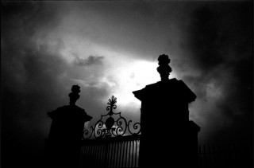
1985年，埃里克男爵将拉菲古堡与艺术联姻，众多知名摄影师如法国摄影大师、画家雅克·亨利·拉蒂克、欧文·佩恩（美国时装摄影大师）、罗伯特·杜瓦诺 （法国最多产的报导摄影家之一）以及理查德·艾维登（享有崇高威望的美国时尚摄影师）都有幸参加了这一创举。拉菲每逢新岁到来之际都要迎来一位摄影大师，随意发挥，制作一张精美的贺年卡片，以送上祝福。从1975至1985年的作品被追溯收集完成，参与此举的艺术家至今已达30多位。
·1984·
购入苏岱产区顶级一等酒庄莱斯古堡
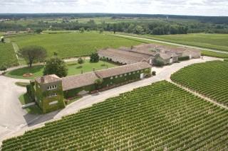
两个世纪以来，莱斯古堡被不断易手，酒庄命运亦跌宕起伏。自拉菲罗斯柴尔德集团接手酒庄后，即全力以赴使其跻身苏岱产区的顶级酒庄之列。为使酒庄潜力充分发挥，该集团针对葡萄园和酿酒工艺采取了一系列严格有效的措施，包括严格筛选、新建橡木桶陈酿酒窖，而且自2000年起，还开展起翻新工程，一切皆以品质为出发点。
·1988·
拉菲古堡新酒窖揭幕
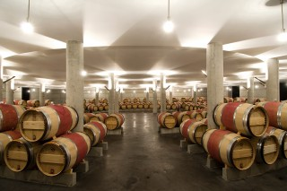
这座由加泰罗尼亚建筑师理查德·波菲尔监造的地下环形陈酿酒窖由16根柱子撑起穹顶，使整个建筑宛若开阔的天空，展现出独有的恢宏与灵美风格。建筑耗时2年，开挖土石方约1万立方米。酒窖中沉睡着2200支橡木桶，葡萄酒在这里经历自己的第二年陈酿。这也是世界上第一座以环形方式储存橡木桶的酒窖。
·1988·
收购智利巴斯克酒庄
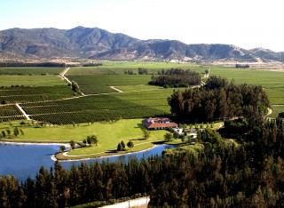
酒庄的西班牙语名字Los Vascos源自“Les Basques”，即“巴斯克”，是1750年在这片土地上种下第一批葡萄树的原业主的祖籍。1988年，拉菲罗斯柴尔德集团接手酒庄的命运，在这里酿制自己的精品美酒。而且，集团还开展了一系列的重建计划，修建了酒厂，扩大了葡萄园，开创出一片新的天地。
·1990·
购入波美侯产区的乐王吉古堡
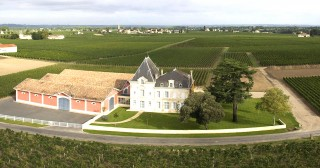
一个多世纪中，乐王吉古堡一直是杜卡斯家族的财产。这家酒庄在波美侯产区的地理位置得天独厚。酒庄被纳入拉菲罗斯柴尔德集团旗下之后，均以顶级酒的质量标准进行甄选，并创酿了副牌拉菲罗斯柴尔德乐王吉徽纹；自1998年起，一部分葡萄园进行了翻整并重新栽种。作为酒庄扩建计划的最后项目，酒窖从2002年开始全面整建。
·1995·
发展精选系列
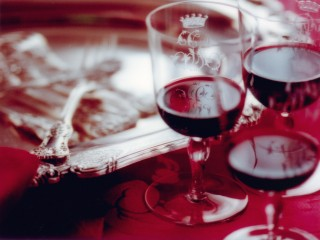
自1995年开始，拉菲罗斯柴尔德集团酿制一系列以波尔多最著名产区——波尔多、梅多克及波亚克为依托的葡萄酒。为了发扬“特选之酒”的分享精神，精选系列汇集传奇、传说和珍藏几大品牌，提供可以即刻享用的魅力美酒。
·1999·
购入波美侯产区的乐王吉古堡
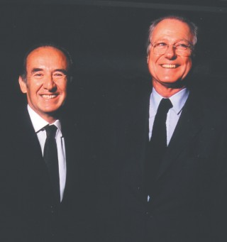
一个多世纪中，乐王吉古堡一直是杜卡斯家族的财产。这家酒庄在波美侯产区的地理位置得天独厚。酒庄被纳入拉菲罗斯柴尔德集团旗下之后，均以顶级酒的质量标准进行甄选，并创酿了副牌拉菲罗斯柴尔德乐王吉徽纹；自1998年起，一部分葡萄园进行了翻整并重新栽种。作为酒庄扩建计划的最后项目，酒窖从2002年开始全面整建。
·2001·
进驻波尔多
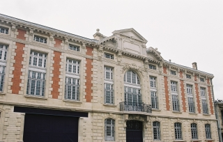
拉菲罗斯柴尔德集团在波尔多设立办公室。集团的新办公地点位于波尔多市内的沙特龙地区，地址为梅多克大道40-50号，这里自古就是波尔多葡萄酒贸易商的聚集地。
·2004·
乐王吉古堡建成新酒窖
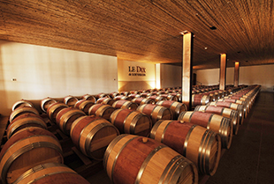
对酿酒车间及酒窖进行了彻底改造以期更适合进行田块挑选的酿制方式。因此，从各个田块采收上来的葡萄被分成小批，独立作业，以便判定其在发酵后是否达到正牌酒的要求。发酵过程一旦完成，葡萄酒将会被放置于地下酒窖的橡木桶中，进行为期18个月的陈酿。其强烈的外在色泽与内部的简约朴素互为衬托，给人一种特别的美感，并为这座美丽的环形酒窖增添了一种亲密之感。
·2008·
进驻波尔多
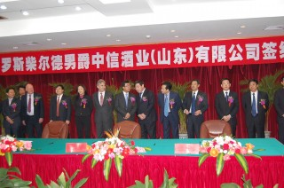
拉菲罗斯柴尔德集团在波尔多设立办公室。集团的新办公地点位于波尔多市内的沙特龙地区，地址为梅多克大道40-50号，这里自古就是波尔多葡萄酒贸易商的聚集地。